Lecture 4: Pre-training, Scaling Laws, and Fine-tuning
Video blocked (ad-blocker or local file mode).
Watch on YouTubeVideo not loading? Watch on YouTube
Original lecture. Pre-training scale, scaling laws, training systems, SFT, and parameter-efficient fine-tuning.
The problem: train once or train per task
Suppose you need a model that answers washer-repair questions with a teddy-bear analogy. The naive route: collect millions of washer-repair Q&A pairs and train from scratch. The cheaper route, and the one the whole industry uses, is transfer learning: learn general structure once on a huge corpus, then specialize cheaply. Three stages:
- Pre-training. Next-token prediction on trillions of tokens. Teaches the structure of language and code. The most expensive step by far.
- Supervised fine-tuning (SFT). Input-output pairs teach the desired behavior. Cheap relative to pre-training.
- Preference tuning. Human preferences shape tone and safety. This is Lecture 5.
The bet is that stage 1 does the heavy lifting and stages 2 and 3 only redirect it. The rest of this chapter prices that bet.
The key question
Training is a budget measured in FLOPs and dollars. Given a fixed budget, how do you split it between model size and data, and how do you fit the run onto real hardware?
Pre-training eats the internet
Common Crawl (12:03), a crawl of roughly 3 billion pages per month, is the canonical raw source. Scale grew fast: GPT-3 trained on 300 billion tokens. Llama 3 on 15 trillion. A frontier pre-training run costs millions to hundreds of millions of dollars.
Three consequences follow. First, the knowledge cutoff: the model knows nothing past its training data (the lecture cites GPT-5’s cutoff as September 30 24:28, as stated in the lecture [uncertain: year given as 2024 in Lecture 7]). Second, knowledge editing is hard: changing what a trained model “knows” without regressions is an unsolved problem. Third, plagiarism risk (23:54): the model memorizes training text and can reproduce it.
Subchapter: the token count ladder
Token counts, era by era:
GPT-3 (2020): 300B tokens Llama 3 (2024): 15T tokens (50x GPT-3) DeepSeek V4.1 (2026): 45T tokens (150x GPT-3)
Fifteen trillion tokens is roughly every public book, paper, and web page several times over, filtered and deduplicated. The growth is not “more of the same”: each jump forced new curation (quality filters, dedup, domain reweighting) because raw web text at that scale is mostly noise. The interview point: data scale is a pipeline achievement, not a download.
Subchapter: curation beats quantity
Raw Common Crawl is mostly boilerplate, spam, and duplicates. The curation stack: language ID (keep the languages you want), quality classifiers (trained on “good” text like Wikipedia and books), exact and fuzzy dedup (the same article copied 10,000 times teaches nothing the second time), and domain reweighting (more code, more math, less SEO spam). Llama 3’s 15T tokens are 15T after filtering, from a far larger raw crawl. The decision rule: a smaller, cleaner corpus beats a larger, dirtier one. The Chinchilla-optimal model on dirty data is still a dirty model.
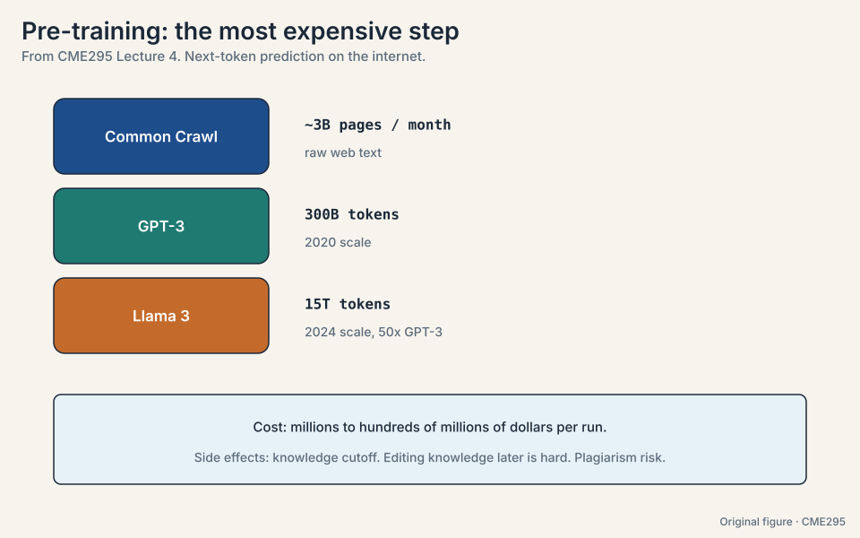
How much work is a training run: FLOPs vs FLOPS
Notation first (13:49). FLOPs (lowercase s) counts floating-point operations: the total work. FLOPS (uppercase S) counts operations per second: the machine’s rate. Training time is roughly FLOPs divided by FLOPS, times hardware efficiency. The lecture’s reference GPU is the H100 with 80GB (30:17), quoted at about 34 TFLOPS in FP64 [uncertain: figure as stated in the lecture].
Now price GPT-3 on the back of an envelope. The standard estimate: about 6 FLOPs per parameter per token (forward plus backward pass).
params = 175B, tokens = 300B total FLOPs = 6 * 175e9 * 300e9 = 3.15e23 one GPU at 34 TFLOPS: 3.15e23 / 3.4e13 = 9.3e9 seconds = 294 years 10,000 GPUs: 294 years / 10,000 = 10.7 days (at 100% efficiency)
Two lessons. First, frontier training is a distributed-systems project: no single GPU finishes in a human lifetime. Second, efficiency is everything: communication between GPUs, memory bandwidth limits, and recomputation all waste FLOPS. Real utilization is a fraction of peak, which is why systems work like FlashAttention exists.
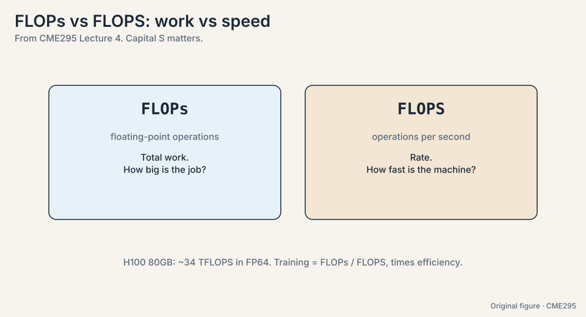
Subchapter: the 6ND rule, where the 6 comes from
The estimate C = 6ND (N parameters, D tokens) breaks down per token. Forward pass: each parameter participates in one multiply-add = 2 FLOPs per parameter. Backward pass: roughly twice the forward (gradients for activations and for weights) = 4 FLOPs per parameter. Total: 2 + 4 = 6 FLOPs per parameter per token. For GPT-3: 6 * 175e9 * 300e9 = 3.15e23. The rule is approximate: it ignores attention’s quadratic term (small for typical lengths) and embeddings (small). For very long contexts the attention term stops being negligible and 6 becomes an underestimate. The interview line: “6 is 2 forward plus 4 backward.”
Subchapter: MFU, why 100% never happens
MFU (model FLOPs utilization) is achieved FLOPS over peak FLOPS. The 10.7-day GPT-3 estimate assumed 100% MFU. Real runs get 30-60%. The losses: communication between GPUs (all-reduce on every step), memory bandwidth stalls (the weights must stream), pipeline bubbles (stages idle), and recomputation (some activations are recomputed, not stored). 50% MFU doubles the 10.7 days to 21.4. Every systems paper in this chapter is an MFU recovery project: FlashAttention recovers memory-stall MFU, ZeRO recovers fit-it-at-all, better networks recover communication MFU.
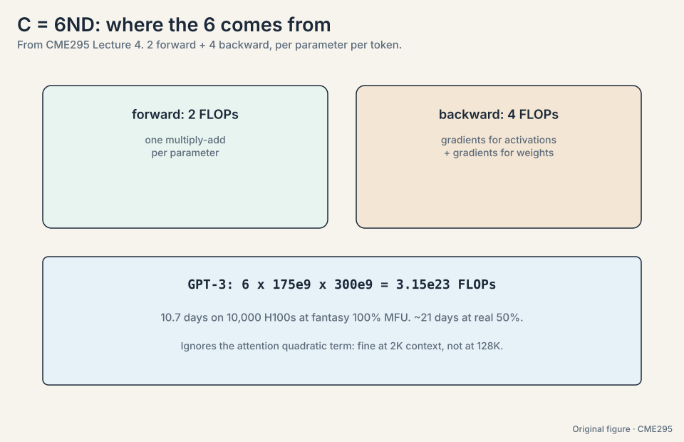
Parameters N = 175B, tokens D = 300B. Rule: 6 FLOPs per parameter per token (2 forward, 4 backward). Total = 6 * 175e9 * 300e9 = 3.15e23 FLOPs. One H100 at 34 TFLOPS: 3.15e23 / 3.4e13 = 9.3e9 seconds = 294 years. On 10,000 GPUs: 294 / 10,000 years = 10.7 days at 100% efficiency. At 50% MFU: 21.4 days. The three numbers to memorize: 6, 3.15e23, and “weeks on ten thousand GPUs”. The attention quadratic term (negligible at 2K context, material at 128K), communication overhead, and the fact that nobody gets 100% MFU. It is an order-of-magnitude tool, not an invoice.
Because it separates people who memorized numbers from people who can estimate. Given a model size and token count you can estimate training FLOPs (about 6 per parameter per token). Given a GPU’s FLOPS you can estimate wall-clock time. The distinction is the whole estimation. Efficiency. Communication between GPUs, memory bandwidth limits, and recomputation all waste FLOPS. Real utilization is a fraction of peak, which is why systems work like FlashAttention exists.
The problem: where should the compute go
Bigger models on more data get better, following smooth power laws: loss falls as model size, dataset size, and compute grow. Kaplan et al. (2020) mapped those curves. But the curves leave a budget question open: given fixed compute, how do you split it between parameters and tokens? More of a big model, or more data for a smaller one?
Chinchilla (2022) answered the split: about 20 tokens per parameter is compute-optimal (19:41). Work the rule on GPT-3:
GPT-3: 175B params. Optimal tokens = 20 * 175B = 3.5T. Actual tokens: 300B. Shortfall: 3.5T / 300B = 11.7x. Verdict: undertrained. Too big for its data.
The rule of thumb: tokens >= 20 x parameters. A 100B-parameter model wants at least 2T tokens. Training a bigger model on the same data wastes the budget. Training a smaller model on more data wins.
Subchapter: Kaplan’s three curves
Kaplan et al. (2020) fitted power laws on three axes separately:
loss ~ N^(-0.076) (parameters, holding data and compute fixed) loss ~ D^(-0.095) (data, holding the rest fixed) loss ~ C^(-0.050) (compute, optimally split)
Loss falls smoothly as each grows: no phase transitions, no cliffs. The practical reading: double the compute, loss drops by a predictable few percent. The curves also say size matters more than shape: depth vs width, attention variants, and other architectural choices move loss far less than scale does. This is why the field scaled first and tuned later. The caveat: Kaplan’s optimal split favored bigger models on less data. Chinchilla corrected it.
Subchapter: Chinchilla applied to four models
Apply tokens >= 20 x params:
GPT-3: 175B params, 300B tokens. Optimal: 3.5T. 11.7x undertrained. Llama 3 70B: 70B params, 15T tokens. Optimal: 1.4T. 10.7x OVERTRAINED. Llama 4 Maverick: 17B active, ~22T tokens (reported corpus). Well past optimal. DeepSeek V4.1: 552B params, 45T tokens. Optimal: 11T. 4x overtrained.
Post-Chinchilla practice deliberately overtrains: smaller models on more data, because inference cost (not training cost) dominates a model’s lifetime bill. A 70B model trained on 15T tokens costs more to train than Chinchilla-optimal but costs the same to serve as any 70B model, and it is smarter per parameter. The decision rule changed from “train compute-optimal” to “train for the inference budget you will live with”.
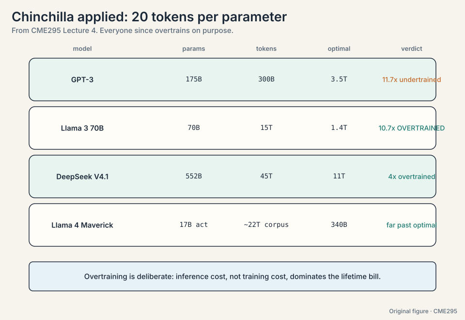
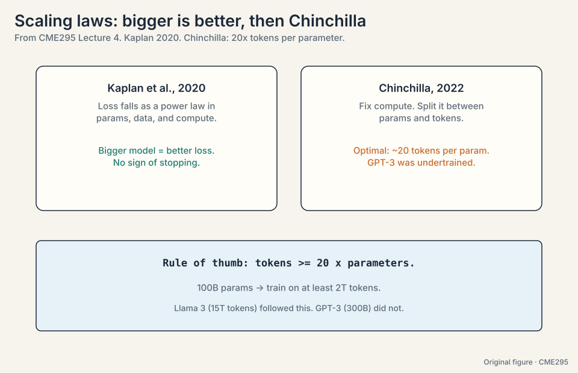
Start from Chinchilla: tokens ~= 20 x parameters. If the model will be served heavily, overtrain deliberately: pick the model size your inference budget allows, then spend the rest on data (Llama 3 70B on 15T tokens is 10.7x past optimal, on purpose). If it is a research run served rarely, stay near 20x. The interview signal: name both regimes and say which budget binds. Kaplan fitted each axis separately and extrapolated the compute-optimal point from small runs. Chinchilla ran the isoFLOP experiments directly: fix compute, try many (N, D) splits, measure. Direct measurement beat extrapolation. The lesson generalizes: fit curves, but verify with isoFLOP runs.
The problem: no single GPU holds the run
The GPT-3 estimate needed 10,000 GPUs even at fantasy efficiency. Now count what one GPU must hold. Adam, the standard optimizer, keeps two extra numbers per parameter (momentum and variance), in FP32:
175B params, mixed precision: parameters (FP16): 2 bytes * 175B = 350 GB gradients (FP16): 2 bytes * 175B = 350 GB optimizer states (FP32): 8 bytes * 175B = 1.4 TB total per replica: ~2.1 TB. An H100 holds 80 GB.
No single GPU comes close. Four strategies divide the work:
- Data parallelism. Each GPU holds the full model and processes a different data shard. Gradients average across workers. Simple, but every GPU must fit the whole 2.1 TB replica.
- ZeRO (33:54, zero redundancy optimization). Shard what data parallelism replicates: ZeRO-1 shards the 1.4 TB of optimizer states, ZeRO-2 adds the 350 GB of gradients, ZeRO-3 shards the parameters too (35:07). With W workers, each holds roughly 2.1 TB / W. Bigger models fit. Communication rises.
- Tensor parallelism (36:45). Split individual layers across GPUs. One forward pass involves many GPUs.
- Pipeline parallelism (37:00). Split layers into stages. Micro-batches flow through. The cost: pipeline bubbles. With 4 stages and 1 micro-batch, stages 2-4 idle while stage 1 works: 3/4 of the hardware waits. More micro-batches shrink the bubble.
Subchapter: ZeRO stages, counted
The 2.1 TB per-replica budget for 175B params: 350 GB params (fp16), 350 GB grads (fp16), 1.4 TB optimizer states (fp32). ZeRO shards each across W workers:
ZeRO-1: shard optimizer states only. Per GPU: 350 + 350 + 1400/W GB. ZeRO-2: add gradients. Per GPU: 350 + 1750/W GB. ZeRO-3: add parameters. Per GPU: 2100/W GB.
At W = 64: ZeRO-1 holds 722 GB per GPU (still too big). ZeRO-3 holds 33 GB per GPU (fits in 80 GB). The price: communication. ZeRO-3 must all-gather the full parameters before every layer’s forward pass, then discard them. More sharding, more network traffic, bigger models fit. The decision rule: use the lowest ZeRO stage that fits. ZeRO-3 when you must, ZeRO-1/2 when you can.
Subchapter: the pipeline bubble, worked
4 stages, 1 micro-batch: stage 1 works while stages 2-4 idle. Then stage 2 works while 1, 3, 4 idle. Total: 4 time units, each stage busy for 1. Utilization: 1/4 = 25%. The bubble is the idle 3/4. With M micro-batches: the pipeline fills (M+3 steps for 4 stages), utilization = M/(M+3). M = 1: 25%. M = 8: 73%. M = 32: 91%. More micro-batches shrink the bubble but shrink each batch’s statistics and add scheduling complexity. Interleaved schedules (1F1B: one forward, one backward) shrink the bubble further by overlapping. The interview line: “The bubble is (stages-1) idle slots per flush. Micro-batches amortize it.”
Subchapter: tensor parallelism’s communication
Tensor parallelism splits one layer’s matrices across GPUs: GPU 0 holds the left half of W, GPU 1 the right half. Each forward pass needs both halves’ outputs combined: an all-reduce per layer, per micro-batch, forward and backward. At 96 layers that is ~200 all-reduces per step. The traffic scales with hidden size, not batch size, so it never amortizes. Consequence: tensor parallelism stays inside one node (NVLink/NVSwitch: TB/s), never across nodes (Ethernet/InfiniBand: GB/s). The standard recipe: tensor-parallel within the node (8 GPUs), data/ZeRO across nodes, pipeline across stages. The 4D parallelism of modern runs is this recipe, tuned.
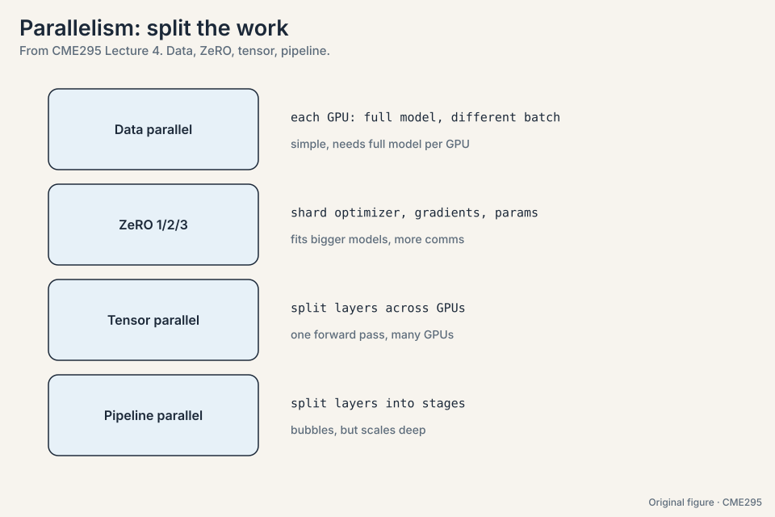
Count it. 70B params: 140 GB params (fp16) + 140 GB grads + 560 GB optimizer (fp32) = 840 GB per replica. ZeRO-3 shards to 105 GB per GPU: too big for 80 GB. Add tensor parallelism (2 ways): 52 GB per GPU, fits. Or ZeRO-3 with CPU offload for the optimizer states: slower, but fits on 8 GPUs alone. The decision rule: lowest ZeRO stage that fits, tensor-parallel within the node before reaching across it, offload only when GPUs cannot be added. Communication. ZeRO-3 all-gathers parameters per layer per step. If the model fits under ZeRO-1 or 2, the extra traffic is pure overhead. Shard only what you must.
The problem: attention moves too much memory
Attention’s bottleneck is memory movement, not math. A GPU has big slow memory (HBM, where Q, K, V live, 39:14) and small fast memory (SRAM, on-chip, 39:28). Naive attention shuttles the full N x N score matrix through HBM. At N = 4,096, that is 16.7M scores per head: 33 MB at 2 bytes each, read and written repeatedly, per layer, per head.
FlashAttention (Stanford, 2022, 38:35) tiles the computation: load a block of Q, K, V into SRAM, compute that block’s output with a running-softmax trick (track the running max and sum, never materialize the full matrix), write the block back. A second idea: recompute instead of storing. Throw away intermediate results and redo the math when needed, because SRAM compute is cheaper than HBM round-trips. The result is exact, not approximate, with roughly 10x fewer HBM accesses.
Subchapter: the running-softmax trick, worked
Softmax needs the max and the sum over the whole row, but the row never sits in SRAM at once. The trick: process blocks and keep running statistics. Toy row split into blocks [3, 1] and [2, 0]:
block 1: max = 3, sum = exp(3-3) + exp(1-3) = 1 + 0.135 = 1.135 block 2: values [2, 0]. new max = max(3, 2) = 3. rescale old sum: 1.135 * exp(3-3) = 1.135 add block 2: exp(2-3) + exp(0-3) = 0.368 + 0.050 = 0.418 running sum = 1.553 final softmax: exp(x-3)/1.553 for each x. Exact.
When a new block raises the max, the old sum rescales by exp(old_max - new_max): algebraically identical to computing over the full row. SRAM holds one block plus two numbers. The N x N matrix never materializes. Online softmax is the whole trick, and it generalizes to any reduction over a streamed row.
Subchapter: HBM vs SRAM, the numbers
The memory hierarchy, one H100:
HBM: 80 GB, ~3.35 TB/s, ~hundreds of cycles latency SRAM: ~50 MB total (per-SM shared), ~19 TB/s, ~tens of cycles
Naive attention at N = 4,096 writes the 16.7M-score matrix to HBM and reads it back, per head, per layer: 33 MB x 2 per head. With 96 heads: ~6 GB of traffic per layer per sequence, most of it the score matrix. FlashAttention’s traffic: Q, K, V in, output out: ~1 MB per head. The ~10x figure is the measured end-to-end HBM access reduction. The per-head math is far more dramatic. The general principle: on modern GPUs, FLOPs are free and bytes are expensive. Every fast kernel is a byte-saving kernel.
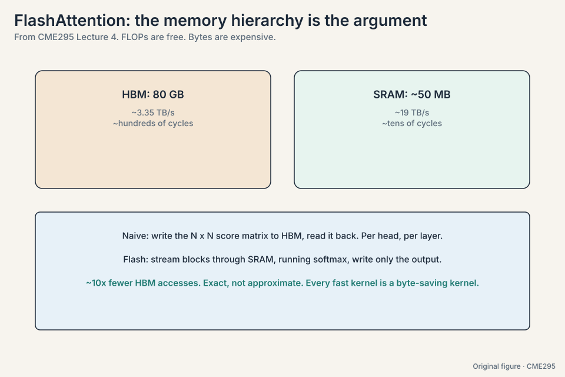
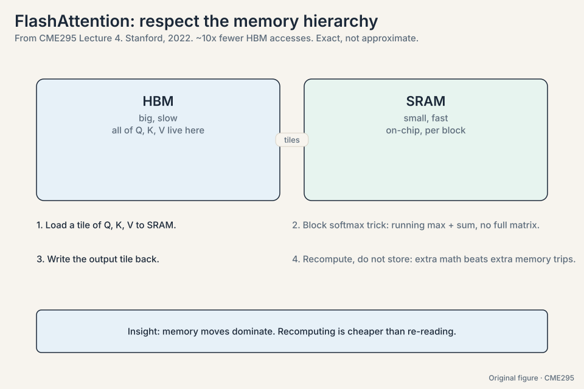
Goal: exact softmax(QK^T/sqrt(d))V without the N x N matrix. Split Q into blocks that fit SRAM. For each Q block: stream K, V blocks through SRAM. For each pair of blocks, compute the block score matrix, and update the running output with the online softmax: track the running row max and the running sum, rescaling the old sum by exp(old_max - new_max) when the max rises. Write the finished output block to HBM. Recompute the scores on the backward pass instead of storing them. Same math as naive attention, ~10x fewer HBM accesses. Storing the block scores for backward would put the N x N matrix back in HBM, defeating the point. SRAM arithmetic is cheap. HBM bytes are expensive. Recompute wins the trade.
Because the memory hierarchy is lopsided. An HBM read costs far more time and energy than redoing the arithmetic in SRAM. When the math is cheap and the data is big, compute is the cheaper currency. No. It computes exact attention. The tiling and the running softmax are algebraically equivalent to the naive version. Speed comes from memory behavior, not from cutting corners.
The problem: full precision is expensive
Quantization stores numbers in fewer bits: FP64 to FP32 to FP16/BF16 to INT8 (53:11). Count it on the 70B model: FP16 is 140 GB. INT8 is 70 GB. Half the memory, faster math, some precision cost.
The standard compromise is mixed precision: keep weights in FP32, do the compute in FP16 (56:53). The master weights stay precise. The arithmetic runs fast. Loss scaling keeps small gradients representable in FP16’s narrow range.
Subchapter: the quantization ladder, counted
The 70B model, one weight at a time:
FP32: 4 bytes x 70B = 280 GB FP16/BF16: 2 bytes x 70B = 140 GB INT8: 1 byte x 70B = 70 GB INT4: 0.5 byte x 70B = 35 GB NF4 (QLoRA): ~0.5 byte x 70B = ~35 GB plus quantization constants
Each rung halves the memory and narrows the representable range. INT8 works well for weights with per-channel scales. INT4 needs careful calibration (GPTQ, AWQ) or quality drops on hard tasks. The rule: quantize weights aggressively, keep activations wider. Weights are static and calibratable. Activations vary per input and punish coarse bins. KV cache quantization (INT8/FP8) is the current frontier: the cache, not the weights, is the serving bottleneck.
Subchapter: loss scaling in mixed precision
FP16 represents down to ~6e-8. Gradients in deep networks routinely fall below that: they underflow to zero and training stalls. Loss scaling multiplies the loss by S (e.g. 2^16) before backward: all gradients scale up by S, representable now. Before the optimizer step, divide back by S. If any gradient overflows to inf (FP16 max is 65504), skip the step and shrink S. Dynamic loss scaling automates the dance. BF16 avoids most of this: same exponent range as FP32, so no scaling needed, at the cost of fewer mantissa bits. Modern runs use BF16 and skip the scaling machinery.
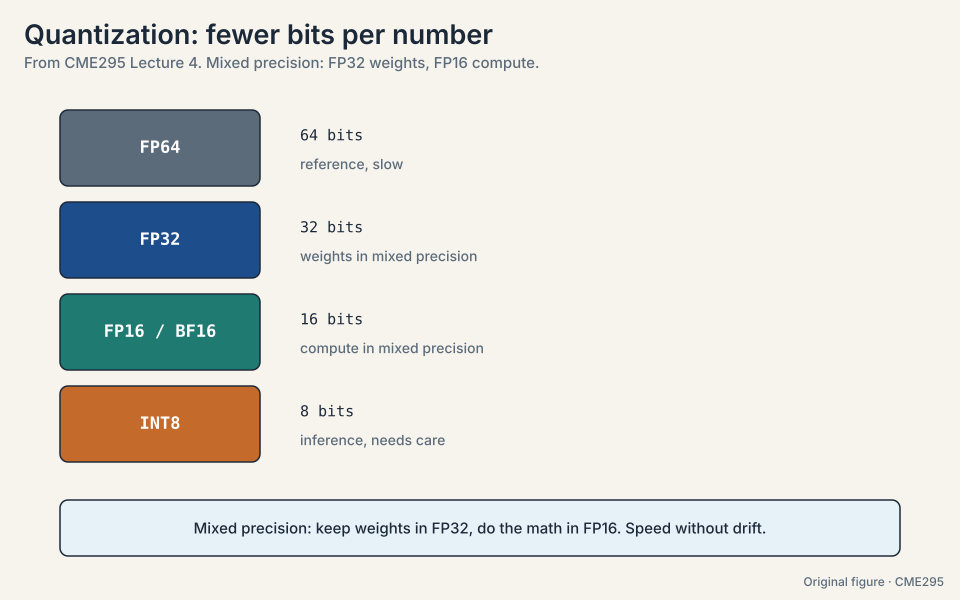
SFT: the completer becomes an assistant
Pre-training produces a completer, not an assistant: it continues text, it does not follow instructions. SFT teaches behavior with input-output pairs. The key detail: loss applies to output tokens only. The prompt is context. The model is graded on its answer.
The lecture’s example is a washer repair question answered with a teddy-bear analogy: the facts come from pre-training, the helpful format comes from SFT. The data mixture matters: instructions, safety examples, hedging (“I am not sure, but…”), multi-turn dialogue. Scale grew with the field: GPT-3-era SFT used about 13K examples. Llama-3-era used about 10M (78:02). Quality beats quantity, but quantity grew anyway.
An emerging middle stage sits between pre-training and SFT: mid-training on a large but higher-quality corpus, a bridge from raw web text to instruction data. Lecture 9 returns to it.
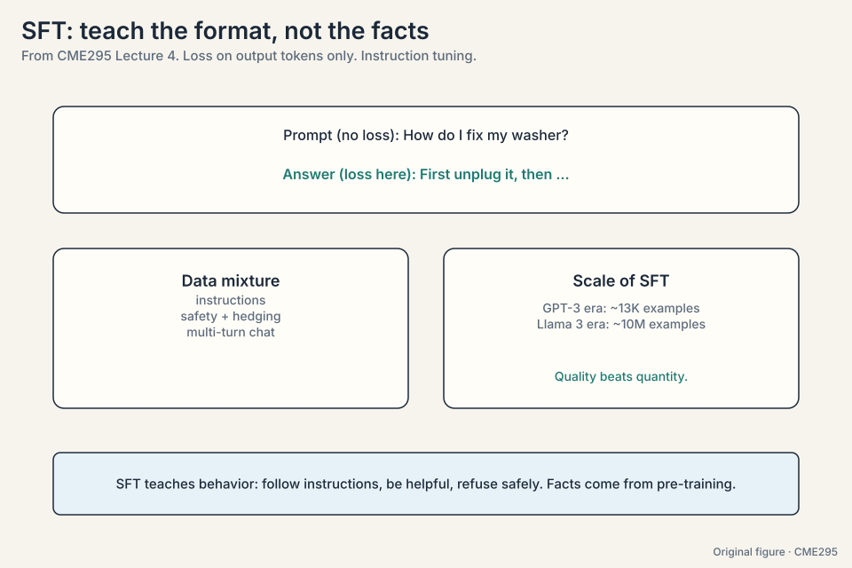
Subchapter: the SFT loss mask, worked
A training example: prompt (20 tokens) + answer (30 tokens) = 50 tokens. The model runs forward on all 50, producing 50 logit vectors. The loss mask zeroes the first 20: only the 30 answer positions contribute. Why: the prompt is given, not generated. Training the model to predict the prompt teaches it to hallucinate questions. The mask is a per-position 0/1 multiplied into the loss. In multi-turn dialogue the mask is finer: user turns masked, assistant turns trained, per turn. One implementation bug to know: forgetting the mask trains the model on its own prompts and measurably degrades instruction-following.
Subchapter: the data mixture, by era
SFT datasets grew and specialized:
InstructGPT era (2022): ~13K human-written demonstrations Llama 2 era (2023): tens of thousands, plus RLHF Llama 3 era (2024): ~10M examples, heavily synthetic 2026 frontier: tens of millions, multi-turn, tool-use, reasoning chains
The mixture matters more than the size: instructions, safety refusals, hedging (“I am not sure, but…”), multi-turn repair, domain coverage. Too much of one flavor and the model overfits the flavor: all-refusal data makes a model that refuses everything. Quality beats quantity, but the frontier does both.
The problem: full fine-tuning is heavy
Full fine-tuning updates every weight: expensive in memory (optimizer states for billions of parameters) and storage (a full copy per task). LoRA (97:56) freezes the base weights W0 and trains a low-rank delta:
W = W0 + BA
Count the parameters. A 4096 x 4096 weight matrix has 16.7M parameters. With rank r = 4, B is 4096 x 4 and A is 4 x 4096: 32,768 parameters. That is 512x fewer. In practice LoRA wants about 10x the learning rate of full fine-tuning, and adapting the FFN blocks helps most (98:20).
QLoRA pushes further: quantize the frozen base to 4-bit NormalFloat (NF4, 106:09), keep the adapters in BF16, and quantize the quantization constants themselves (double quantization, 106:33). Roughly 16x less VRAM: fine-tune a 65B-class model on a single GPU.
Subchapter: the rank-r formula, general
For a d x k weight matrix, LoRA trains B (d x r) and A (r x k): params = r(d + k). The ratio to full fine-tuning: r(d+k)/(dk). On square 4096 blocks with r = 4: 48192/16.7M = 1/512. On the 70B model’s 8192-wide blocks with r = 8: 816384/67M = 1/512 again. The ratio depends on r/d, not on model size: r = 4 on 4096-wide blocks is always ~1/512 of the block. Rank is the budget knob: r = 1 trains almost nothing, r = 64 approaches full fine-tuning cost. The empirical sweet spot for instruction tuning: r = 4 to 16. The interview line: “LoRA’s savings are relative, not absolute: 1/512 of whatever block you adapt.”
Subchapter: the LoRA family
- LoRA (2021): the original. W = W0 + BA. Merge BA into W0 after training: zero inference overhead.
- QLoRA (2023): NF4-frozen base, BF16 adapters, double quantization. ~16x less VRAM. The single-GPU fine-tuning standard.
- DoRA (2024): decompose the update into magnitude and direction, train both. Closer to full fine-tuning on hard tasks, slightly more cost.
- rsLoRA (rank-stabilized): scale the adapter output by 1/sqrt(r) instead of 1/r, so higher ranks stay stable. Use it when r > 16.
The family shares one idea: the update lives in a small subspace. Pick by budget: QLoRA for one GPU, LoRA for a few, DoRA when quality matters most.
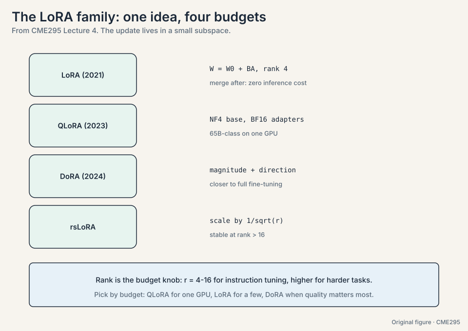
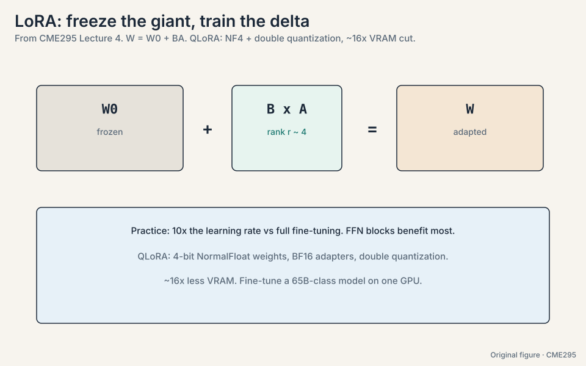
Start at r = 8. The math: on 4096-wide blocks, r = 8 trains 1/256 of the block’s params. Instruction tuning redirects behavior, which lives in a low-dimensional subspace: r = 4-16 covers it empirically. If evals plateau, raise to 16 or 32 before blaming the data. If you need r = 64+, the task probably needs new knowledge, not redirection: consider full fine-tuning or more pre-training. Attention projections (q, v) at minimum. Add the FFN (gate, up, down) when quality matters. The lecture notes FFN blocks help most. Adapting everything costs more and rarely pays.
Fine-tuning mostly steers behavior, not knowledge. The needed change has low intrinsic dimension: a few directions in weight space capture “answer in this format” or “follow these instructions”. The base model already knows the facts. The delta only redirects them. When the task needs genuinely new capabilities or knowledge, not just redirection. Deep domain adaptation and large distribution shifts still favor full fine-tuning, or more pre-training.
The problem: benchmarks mislead
SFT and scale need measuring, but benchmarks mislead. Three the lecture names:
- MMLU (87:00): about 50 academic tasks, multiple choice. Broad knowledge.
- GSM-8K (87:49): grade-school math word problems. Reasoning with exact answers.
- Chatbot Arena (91:11): pairwise human votes on open chat. Captures vibes. Brittle and riggable.
The trap has a name: “training on the test task”. Optimizing the benchmark is not the same as improving the model. Lecture 8 is the full treatment.
Subchapter: contamination, how benchmarks leak
Benchmarks leak into training data three ways. Direct inclusion: the benchmark’s test set sits in the pre-training corpus (Common Crawl contains everything). Paraphrase inclusion: reworded versions of test questions appear in training. Distillation leakage: a teacher model trained on the benchmark distills its knowledge into the student. Defenses: canary strings (unique hashes embedded in the benchmark, searched for in training data), blocklists, and fresh test sets written after the model’s cutoff. The honest reading: any benchmark older than the model’s training data is suspect. Trust benchmarks with post-cutoff test sets and contamination reports. The rest are directional, not decisive.
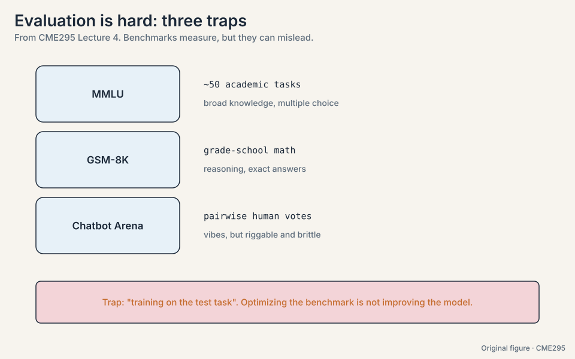
Mapping back: each stage answers a cost problem
| Cost problem | Answer | The number |
|---|---|---|
| Training per task from scratch | Transfer learning | Pre-train once on trillions of tokens. SFT cheaply per task |
| How much work is a run | FLOPs vs FLOPS | GPT-3: 3.15e23 FLOPs. 294 GPU-years at 34 TFLOPS |
| How to split the budget | Chinchilla | 20 tokens per parameter. GPT-3 was 11.7x undertrained |
| 2.1 TB does not fit 80 GB | ZeRO / tensor / pipeline | ZeRO-3 shards to ~2.1 TB / W per GPU |
| Attention drowns HBM | FlashAttention | ~10x fewer HBM accesses. Exact, not approximate |
| Precision costs memory | Mixed precision, quantization | FP16 compute with FP32 masters. INT8 halves the model |
| Completer, not assistant | SFT | Loss on output tokens only. Mixture teaches format |
| Full fine-tuning per task | LoRA / QLoRA | Rank-4 delta: 512x fewer params. QLoRA: ~16x less VRAM |
The honest price
The whole chapter is a list of prices. Pre-training buys knowledge and pays millions plus a knowledge cutoff, un-editable weights, and memorized text. Chinchilla-optimal training buys efficiency and pays in smaller models: the biggest model is not always the right model. Parallelism buys scale and pays in communication and bubbles. FlashAttention buys speed and pays in kernel complexity. Quantization buys memory and pays in precision. SFT buys behavior and pays in the risk of training on the test task. LoRA buys cheap adaptation and pays in a low-rank ceiling: redirection, not new knowledge.
Recap: the whole lesson on one screen
The story in eight steps. Each step answers the one before it.
- Train once, specialize cheaply. Transfer learning: pre-train on trillions of tokens, SFT for behavior, preference tuning for taste. The bet is that stage 1 does the heavy lifting.
- Pre-training eats the internet. Common Crawl at ~3B pages/month. GPT-3: 300B tokens. Llama 3: 15T. Millions to hundreds of millions of dollars. Cutoff, editing hardness, and plagiarism follow.
- FLOPs is work, FLOPS is rate. GPT-3: 6 * 175B * 300B = 3.15e23 FLOPs. At 34 TFLOPS: 294 GPU-years, or 10.7 days on 10,000 GPUs at fantasy efficiency. Estimation starts here.
- Chinchilla: 20 tokens per parameter. GPT-3 needed 3.5T tokens and got 300B: undertrained by 11.7x. Tokens >= 20x params is the rule of thumb.
- Split the work. Adam states alone are 1.4 TB for 175B params. ZeRO shards optimizer, gradients, params. Tensor splits layers. Pipeline splits stages and pays bubbles.
- Respect the memory hierarchy. FlashAttention tiles to SRAM, uses a running softmax, recomputes instead of re-reading HBM. Exact, ~10x fewer HBM accesses.
- SFT teaches format, not facts. Loss on output tokens only. 13K examples then, ~10M now. Quality beats quantity.
- LoRA: freeze the giant, train the delta. W = W0 + BA at rank 4: 512x fewer params on a 4096 x 4096 block. QLoRA adds NF4 plus double quantization: ~16x less VRAM, 65B-class fine-tuning on one GPU.
Go deeper
- Lecture 4 recording: https://www.youtube.com/watch?v=VlA_jt_3Qc4
- Karpathy, “Let us reproduce GPT-2 (124M)” (training at scale, end to end): https://www.youtube.com/watch?v=l8pRSuU81PU
- Hoffmann et al., Chinchilla: https://arxiv.org/abs/2203.15556
- Dao et al., FlashAttention: https://arxiv.org/abs/2205.14135
- Hu et al., LoRA: https://arxiv.org/abs/2106.09685
- Dettmers et al., QLoRA: https://arxiv.org/abs/2305.14314
Official sources and further reading
Official: - Lecture 4 recording (YouTube): timestamped above. - Lecture 4 slides (PDF), CME295 Autumn 2025. - Kaplan et al., “Scaling Laws for Neural Language Models” (2020): paper - Hoffmann et al., “Chinchilla” (2022): paper - Dao et al., “FlashAttention” (2022): paper - Hu et al., “LoRA” (2021): https://arxiv.org/abs/2106.09685
Further reading: - Dettmers et al., “QLoRA” (2023): NF4 and double quantization. - Rajbhandari et al., “ZeRO” (2020): sharded training. - Hendrycks et al., “MMLU” (2020). - Cobbe et al., “GSM-8K” (2021).
Caveats from these sources. The H100 FP64 figure is as stated live [uncertain]. GPT-5’s cutoff date is as stated in the lecture. Model cards move. The “13K vs 10M” SFT figures are era illustrations, not exact dataset sizes. Mid-training is presented as emerging practice, not settled method.
Connections to the other courses
- CS336 L09/L11: scaling laws derived in full, including the post-Chinchilla debate.
- CS336 L05-L08: GPUs, Triton kernels, parallelism, 4D parallelism: the systems this chapter summarizes.
- CS336 L13-L14: training data and data pipelines: the curation side of pre-training.
- CS336 L15: post-training: SFT practice at the frontier-lab level.
- CS224N L12: efficient training from the NLP side.
- CME295 L05: preference tuning, the third training stage.
Sources
- VIDEOLecture 4 slides (PDF), CME295 Autumn 2025
- PAPERKaplan et al., Scaling Laws for Neural Language Models (2020)
- PAPERHoffmann et al., Training Compute-Optimal Large Language Models / Chinchilla (2022)
- PAPERDao et al., FlashAttention: Fast and Memory-Efficient Exact Attention (2022)
- PAPERHu et al., LoRA: Low-Rank Adaptation of Large Language Models (2021)